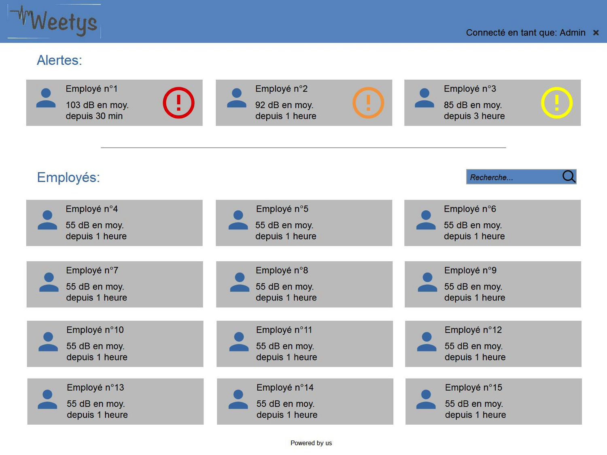
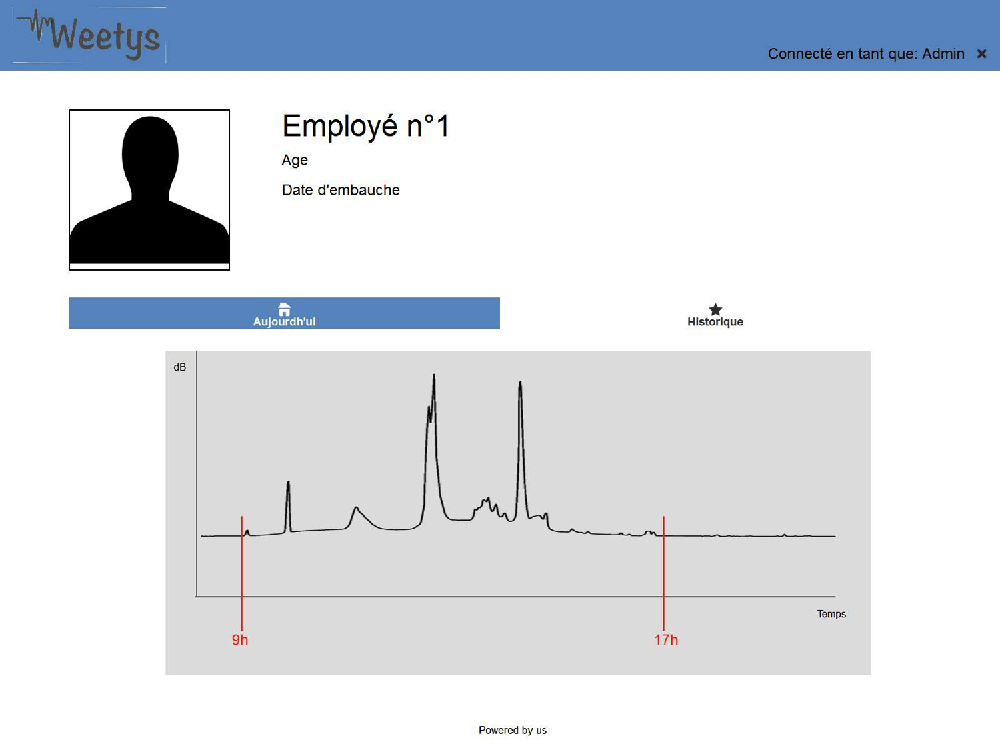

L'employé de bureau, notamment dans les services commerciaux et les standards, peut très souvent travailler au téléphone avec ou sans casque, avec ou sans fil dans un bureau isolé ou dans un espace collectif, avec ou sans séparation : les casques, pour permettre de communiquer correctement avec l'interlocuteur, sont réglés souvent à des niveaux trop élevés, car le travail en bureau expose aussi à d'autres sources de bruit qui créent une forte ambiance sonore : les conversations téléphoniques des autres collègues, le bruit des ordinateurs, des imprimantes, des sonneries, et de la climatisation. Si les postes de travail ne sont pas séparés par des cloisons acoustiques, le manque d'isolation phonique génère un bruit ambiant trop souvent à des niveaux incompatibles à la fois avec un travail intellectuel et un bon confort d'écoute au téléphone avec les risques suivants : fatigue auditive, perception d'acouphènes, risque de lésions auditives et de déficit auditif temporaire ou définitif d'installation insidieuse, lié à une exposition chronique au bruit. La fragilité au bruit dépend largement de la susceptibilité individuelle s'accroît avec l'âge et devient plus marquée au-delà de 50 ans (presbyacousie).
L'employé, lorsqu'il arrive au travail met un bracelet. Ce bracelet permet d'analyser tous les bruits de l'environnement extérieurs. Toutes ces données enregistrées sont directement reliées à une interface spécifique pour l'entreprise. Cette dernière disposera d'un compte rendu qui indiquera si ses employés sont exposés à un environnement auditif trop élevé. De cette manière, elle pourra prendre des mesures pour protéger ses employés. L'employé pourra également avoir accès à ses propres données en se connectant sur cette interface grâce à son identifiant.
De ce fait, l'entreprise vera une baisse des arrêts maladies. Ci-dessous photos qui montrent l'interface de l'entreprise.Première interface
Deuxième interface
